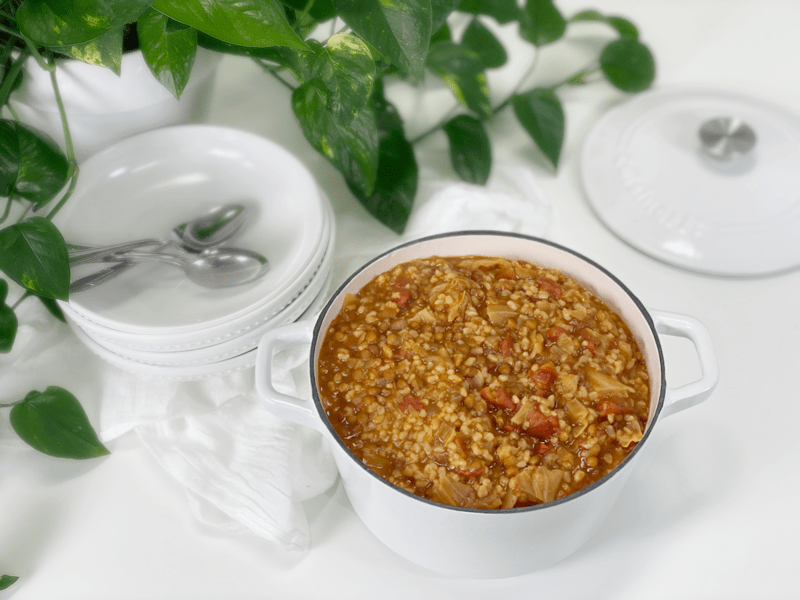

Are you a soup lover? I wasn’t for a long time. It wasn’t that I didn’t like soup–it just never seemed satiating enough, thus not making it worth my time. Silly me. That was way back in the day when I ate out of boxes and cans. Campbell’s Chicken and Stars was my go-to. Thank goodness the love affair with whole foods came into my life, because with that came my love for soup. This soup turned out thick, hearty, and just downright delicious.

To make this picture Instagram worthy, I should have sprinkled chopped parsley on top! DOH!
What I love about this soup is that it is loaded with veggies, texture, and flavor, which equates to a delicious-nutritious-good-for-the-belly meal. If you own an Instant Pot, use it! If you don’t own one, you might want to look into purchasing one. But it’s undoubtedly not a requirement, as I provided stove top instructions as well. Either way, you won’t be disappointed.
I often like to go over why I use the ingredients that I do, but for the most part, everything here is pretty straight forward. The only ingredient that might leave you scratching your head is the addition of kombu seaweed. What the heck, Amie Sue?! I don’t want my soup to taste fishy! Trust me, it won’t affect the flavor at all, but it WILL ramp up the nutritional content! Let me share a brief explanation as to why I add kombu seaweed to my soups, rice, beans, etc.
Why I Add Kombu Seaweed and What It Is
Kombu is a type of sea kelp that is rich in vitamins and minerals, including potassium, calcium, and iodine. It is a great ingredient to keep stashed in your pantry, as it makes grains and legumes more digestible when added to the cooking water.
It is high in vitamins A, C, E, B1, B2, B6, and B12. Seaweed also contains a substance (ergosterol) that converts to vitamin D in the body. In addition to essential nutrients, seaweeds provide us with carotene, chlorophyll, enzymes, and fiber. And while we are at it…it is high in iodine, which is essential for thyroid functioning! So next time you make soup, oats, rice, vegetable broth, or beans, add a strip into the pot and reap the nutritional benefits of seaweed. Read more (here).
Batch Cooking
This soup yielded ten lovely cups. Now, that’s a lot of soup. Of course, depending on the size of your family, it might be a single dinner serving. It’s just Bob and me, so I plan to freeze half of it in pint-sized freezer-safe jars. I must have been an army cook in a previous life, because I always seem to make a lot of food. But I have come to learn that it is actually a blessing. I love to take about half of whatever I make and freeze in single portions. By doing this, I am naturally building a surplus of a variety of foods.
Soup Tips
- One of the many things I love about this soup is that it’s nice and thick. If you prefer a different texture, add 2 more cups of vegetable broth.
- If you are salt sensitive, hold off on adding the 1 teaspoon of sea salt. You can always add salt to each bowl served. Plus, it all depends on the ingredients you use. Vegetable broth and canned tomatoes can have salt in them, and coconut aminos are salty.
- Make it a day ahead of time so the flavors can really infuse together. It’s delicious right out of the gate, but leftovers will be even more delicious.
- Freeze half of the soup in pint-sized freezer-safe jars, to build a stock of foods for days when you don’t have time or energy to cook.
Making Every Bite Count
- This recipe was designed to be fat-free and oil-free, but if you want, you can use oil to sauté your onions.
- Adding the kombu seaweed is entirely optional. It doesn’t affect the taste of the soup; I am just trying to make every bite count. Make the soup even if you don’t have kombu on hand, but look into getting some if you can. It is dried and will keep in your pantry for a long time.
- Soaking the lentils is an option, but let me explain why I do it. The outer shell of lentils contains anti-nutrients that can interfere with digestion. My solution is to soak them for eight hours, thereby neutralizing the anti-nutrients. Start by rinsing them, then soaking with a tablespoon of lemon juice. Once they are done soaking, give them a rinse, and add to the soup mix.
- I also soak rice in the same manner, for the same reasons!
- Eat one mouthful at a time. Put less on your spoon. Chew more (even soup). Put your spoon down between bites. Let your digestion savor the soup just as much as your tastebuds.
Ready to make some soup?! I will meet you in the kitchen. Please leave a comment below and have a blessed day, amie sue
yields 10 cups
- 2 Tbsp water
- 1 large onion, diced
- 6 cups chopped cabbage
- 2 large garlic cloves, minced
- 6 cups vegetable broth
- 3/4 cup dried brown lentils, soaked
- 2 cups uncooked brown rice, soaked
- 2 (14-ounce) cans diced tomatoes in juice
- 2 Tbsp coconut aminos or tamari
- 2 Tbsp red wine vinegar
- 1 Tbsp smoked paprika
- 1 tsp liquid smoke
- 1 tsp sea salt
- 1/4 tsp black pepper
- Kombu seaweed, one 4″ piece